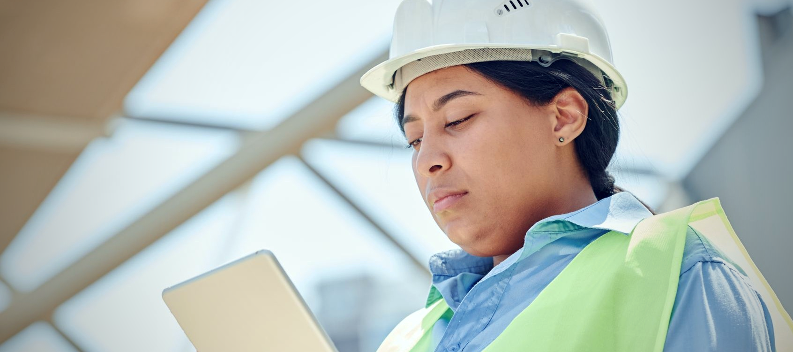

Реальное фото приёма заявок на стройплощадке (Pexels, бесплатная лицензия) — обработано под фирменный стиль, поверх — частичная анимация: всплывающий значок "Новая заявка" рядом с планшетом (не вся картинка, только один акцент).

Новая заявка
Автоматизация
Telegram-бот приёма заявок
Приём и обработка заявок для строительной компании через Telegram
Фото: pexels.com/photo/8961008 (бесплатная лицензия, коммерческое использование разрешено) — прораб/инженер в каске с планшетом на стройплощадке. Обработка: цветокоррекция под фирменный синий (кривые R/B), контраст +10%, насыщенность +8%, мягкая виньетка. "Частичная анимация" — всплывающий бейдж "Новая заявка" с зелёной точкой рядом с планшетом, появляется и исчезает циклично (3.6с) — сама фотография статична.